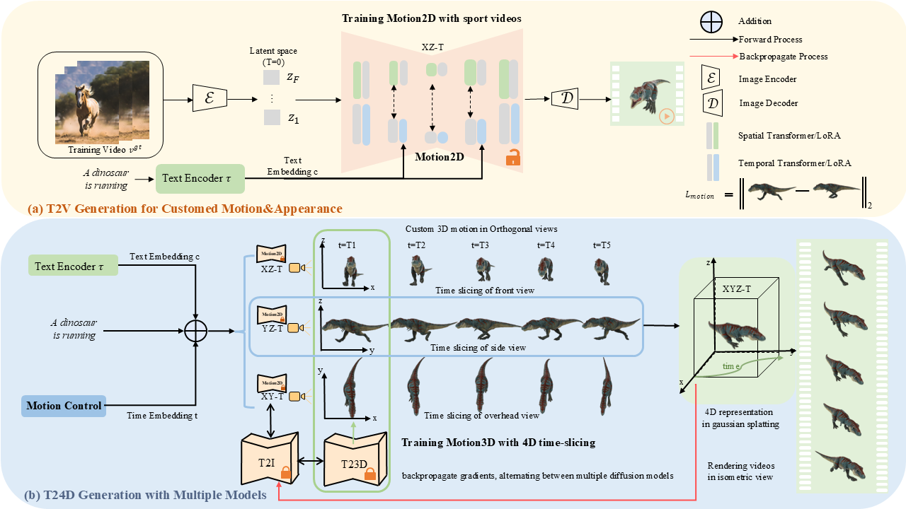

Recent breakthroughs in text-to-4D generation rely on pre-trained text-to-image and text-to-video models to generate dynamic 3D scenes. However, current text-to-4D methods face a three-way tradeoff between the quality of scene appearance, 3D structure, and motion. For example, text-to-image models and their 3D-aware variants are trained on internet-scale image datasets and can be used to produce scenes with realistic appearance and 3D structure-but no motion. Text-to-video models are trained on relatively smaller video datasets and can produce scenes with motion, but poorer appearance and 3D structure. While these models have complementary strengths, they also have opposing weaknesses, making it difficult to combine them in a way that alleviates this three-way tradeoff. Here, we introduce hybrid score distillation sampling, an alternating optimization procedure that blends supervision signals from multiple pre-trained diffusion models and incorporates benefits of each for high-fidelity text-to-4D generation. Using hybrid SDS, we demonstrate synthesis of 4D scenes with compelling appearance, 3D structure, and motion.
A 4D radiance field is parameterized using a neural representation with a static and dynamic multiscale hash table of features. Images and videos are rendered from the representation using volume rendering, and we supervise the representation using hybrid score distillation sampling-a technique that combines gradients from multiple types of pre-trained diffusion models. In the first stage of training we use gradients from a 3D-aware text-to-image model (3D-T2I) to iteratively optimize a representation without the Janus problem. Next, we blend in gradient supervision using variational SDS with a text-to-image model (T2I) to improve the appearance (i.e., we alternate supervision between 3D and image models). In the last stage we incorporate gradients from a text-to-video model (T2V) to add motion to the scene, and we update the scene using the other models in an alternating fashion.
Make-A-Video3D
Ours